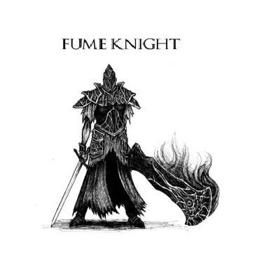
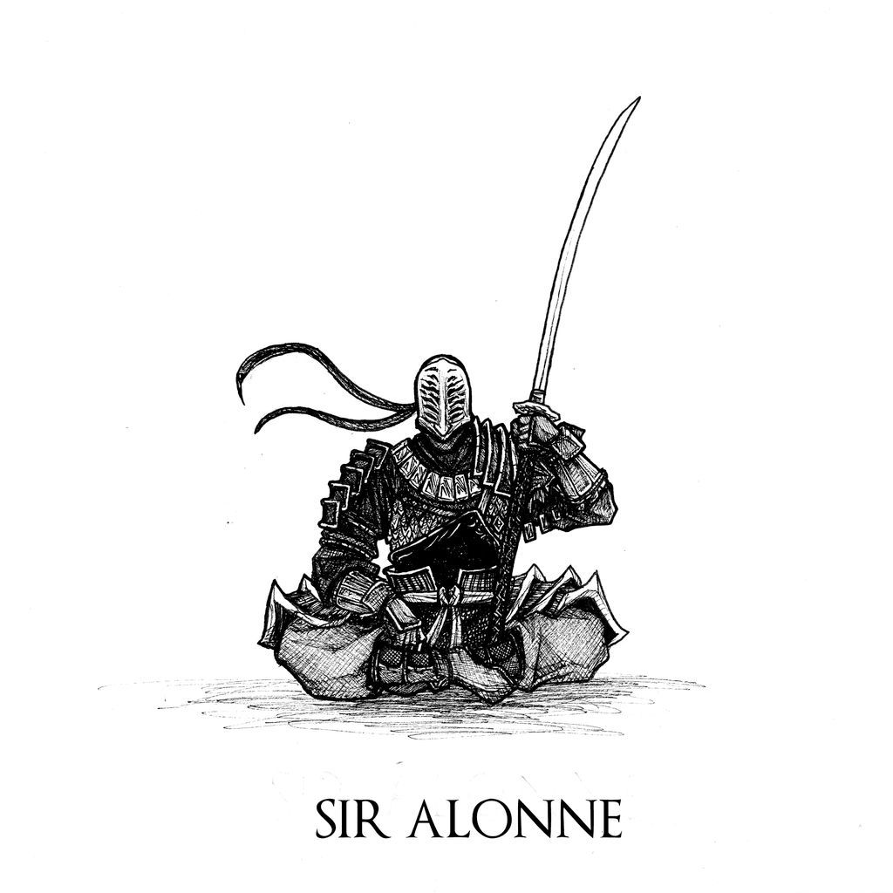
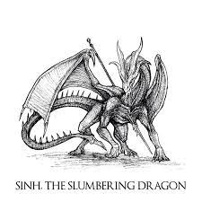
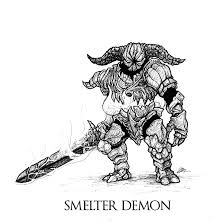

¿Que es Dark Souls II?
Dark Souls II es la segunda entrega de la saga Souls, desarrollado por FromSoftware y publicado por
Bandai
Namco Entertainment en 2014.
Esta entrega se situa cientos o incluso miles de años luego de los
acontecimientos del primer juego, trasncurriendo en el reino de Drangleic donde te pones en la piel del
Portador de la Maldicion que esta en busca de librarse de la marca de los no-muertos.
Su trayecto en la industria de los videojuegos
Dark Souls II ha sido catalogado desde su lanzamiento como la "oveja negra" de la familia, teniendo un
desempeño moderado en el mercado debido a su sistema de combate mas arcaico que su antecesor.
Similar al juego anterior, el jugador puede personalizar su género y características físicas además de
su clase inicial, que determina las estadísticas y el equipo que el jugador llevará al comienzo del
juego, y el obsequio inicial.
Una versión remasterizada del juego,
titulada
Dark Souls II: Scholar of the First Sin, fue lanzada para PlayStation 3, PlayStation 4, Xbox 360,
Xbox One y PC en abril de 2015.
Contiene el juego original y su contenido descargable con
gráficos actualizados, capacidad multijugador en línea ampliada y varios otros cambios.
Sus Bosses mas memorables

Raime era uno de los caballeros más distinguidos del reino de Drangleic; su pájaro favorito, el cuervo, era su insignia. Raime era considerado como la mano izquierda del rey Vendrick y era uno de sus caballeros más confiables, junto con Velstadt el Escudo Real. Sin embargo, eventualmente se enfrentó a Velstadt y pasó a ser considerado un traidor por el rey.

Sir Alonne llegó a esta tierra desde el este, eligió servir a un señor poco conocido y no establecido y lo ayudó a convertirse en el Viejo Rey de Hierro. Luego, en la cima del gobierno de su padre, Sir Alonne partió de nuevo en busca de tierras aún desconocidas.

Sinh era un dragón durmiente el cual fue adorado por la gente de Shulva, Ciudad Santuario. El Rey Hundido construyó la ciudad en torno al lugar de descanso de Sinh, y creó el Gran Santuario del Dragón para proteger a la criatura de los intrusos. Los soldados del santuario vigilaban al dragón, mientras que las sacerdotisas intentaban continuar el largo letargo de la criatura con su canción.

El Demonio de la fundición es una construcción hecha de hierro que ha sido animada de alguna manera. Su cuerpo está hecho enteramente de hierro a excepción de una parte de su pecho, que es hueca y expone un núcleo de llamas.